Cordova Plugin 만들기 #2
본 post에서는 Cordova Plugin 작성에 대해 설명합니다
본 post의 내용은 Cordova Plugin 만들기 #1에서 이어집니다
Plugin Structure
Cordova Plugin을 이루고 있는 골자는 크게 다음과 같다.
- 사용하고자 하는 Native 기능이 담긴
Native Interface cordova.exec를 통해 Native platform과 통신하는Javascript Interface- 플러그인의 명세가 담긴
config파일
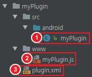
이후 위의 내용을 바탕으로 사용자에게 텍스트를 입력받아 그대로 출력하는 Echo 플러그인을 작성해본다.
Native Interface
Cordova Project에서 사용하는 Native 기능을 작성한다.
본 파일은 CordovaPlugin을 extend하는 자바 클래스로서, CordovaPlugin으로부터 메소드를 Override 받아 필요한 기능을 작성한다.
1 | import org.apache.cordova.CordovaPlugin; |
생명주기
myPlugin 플러그인 객체는 Cordova Webview의 수명을 따른다.
기본적으로 플러그인 객체는 JavaScript의 호출 시점에 인스턴스화 되며, plugin.xml에서 별도의 옵션을 주면 시작과 동시에 인스턴스화 시킬 수 있다.
플러그인 작성
JavaScript Interface에서 플러그인 호출이 일어나면 Native Interface의 execute 메소드로 전달이 된다.
execute 메소드는 CordovaPlugin에서 Override를 받아 작성하며, 다음과 같이 작성할 수 있다.
1 | package com.test.myplugin; |
플러그인 코드 작성이 끝났으면 이를 plugin.xml에 Native Interface에 대한 명세를 작성한다
Plugin 명세 작성
Plugin에 대한 명세는 Plugin 폴더 상단에 위치한 plugin.xml(파일 명이 다를 수 있음)에 작성한다.
1 | <?xml version='1.0' encoding='utf-8'?> |
명세를 작성한 다음에는 JavaScript Interface를 수정해
JavaScript Interface
JavaScript로 Native Interface를 호출 할 수 있도록 JavaScript Interface를 수정해준다.
1 | var exec = require('cordova/exec'); |
exec는 platform 추가시 platform_www/cordova.js에 위치한다.
JavaScript Interface를 좀 더 전문적으로 사용하기 위해서는 확인이 필요하지만 본 포스트에서는 넘어가도록 한다.
exports.echo 를 통해 등록한 함수를 JavaScript로 호출할 수 있다.
함수 내부의 exec는 총 다섯가지의 매개변수를 갖는다.
1 | function(Arguments, SuccessCallback, ErrorCallback) { |
- SuccessCallback:
Native Interface에서callbackContext.success를 통해 전달받는 콜백함수 - ErrorCallback:
Native Interface에서callbackContext.error를 통해 전달받는 콜백함수 - “FeatureName”:
config파일 내에<feature name="" >에서 사용되는 name을 기입한다 - “ActionName”:
Native Interface에서execute메소드에서 전달받아 사용할 Action 명을 기입한다 - [Arguments]:
Native Interface로 보낼 매개변수 (반드시 배열로 보내야 함)
위의 매개변수를 바탕으로 JavaScript Interface에서 Native Interface로 매개변수와 호출할 함수를 전달한다.
package.json 작성
플러그인 작성이 끝났으면 plugin에서 사용할 package.json을 작성해 주어야 한다
이전 포스트에서 사용했던 plugman 모듈을 사용해 package.json을 작성해 줄 수 있다.
myPlugin 디렉토리에서 아래와 같은 명령어를 사용한다
1 | $ plugman createpackagejson . # .을 반드시 써주어야 한다 |
이후 나오는 내용을 본인에게 맞게 수정해주면 된다.
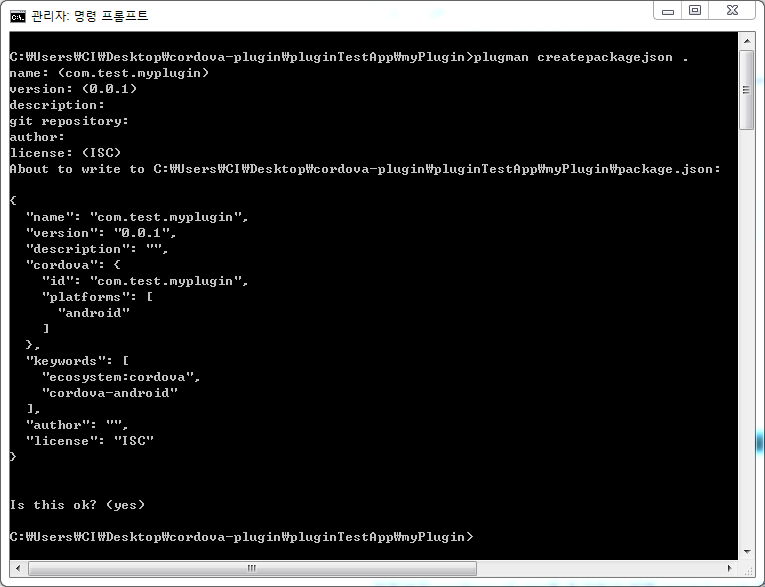
예시에서는 별다른 수정없이 엔터만을 쳐서 넘겼다.
플러그인 설치
위의 내용을 잘 따라왔다면 프로젝트 디렉토리는 다음과 같을 것이다.
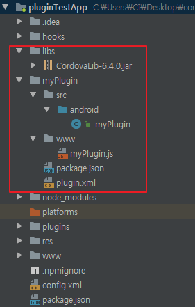
이후 Android Platform을 설치해준다.
1 | $ cordova platform add android |
platform이 추가되었으면 다음의 명령어를 통해 myPlugin을 설치해준다
1 | $ cordova plugin add myPlugin --link |
명령어 실행 후 plugins디렉토리 아래에 com.test.myplugin으로 디렉토리가 하나 생기고 그 안에 우리가 작성한 myPlugin의 내용이 담겨있다plugin.xml의 <plugin id="">의 값이 디렉토리의 이름으로 지정이 된다.
따라서 이름을 바꾸고 싶으면 위의 부분을 바꾸어 주면 된다.
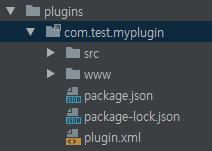
마찬가지로 아래의 사진에서 plugin.xml의 <source-file src="" target-dir="">에서 target-dir의 값이 platform 내에 들어간 것을 확인 할 수 있다
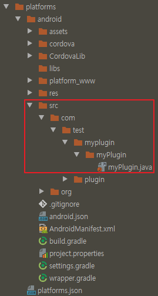
플러그인 실행
플러그인 설치까지 완료 되었으면, 실제 Cordova App에서 플러그인이 정상적으로 작동하는지 테스트 해보자
플러그인 호출 코드 작성
프로젝트 루트 내에 있는 www/아래의 index.html을 다음과 같이 수정해준다.
1 | ~~~ |
이어서 www/아래의 js/index.js에 아래의 내용을 추가해준다button#send를 클릭하면 input의 값을 plugin으로 보내고, callback받은 값을 alert으로 띄우는 코드이다1
2
3
4
5
6
7
8
9
10
11
12
13~~~
app.initialize();
document.getElementById('send').addEventListener('click', sendInput);
function sendInput() {
var input = document.getElementById('echo').value,
success = function(v) { alert(v); },
error = function(v) { alert(v); };
cordova.plugins.myPlugin.echo(input, success, error);
}
테스트
작성이 모두 끝났으면 device를 pc에 연결하고 cordova project를 실행한다
1 | $ cordova run android |
정상적으로 실행이 되면 기기에서 수정된 html을 확인 할 수 있다
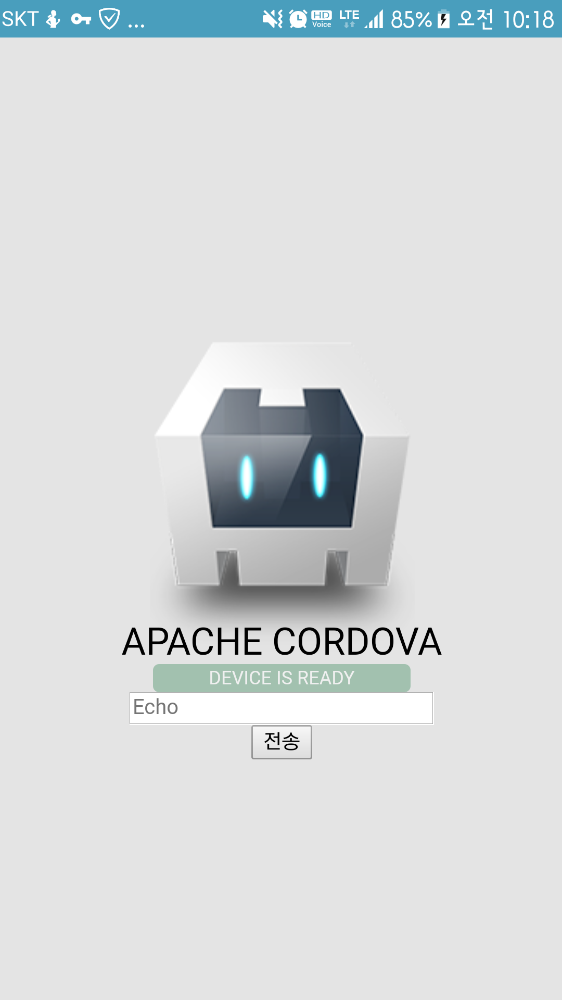
Input창에 임의의 텍스르를 입력하고 전송을 누르면 Native Interface를 거쳐 callback으로 받아와 화면에 보여준다
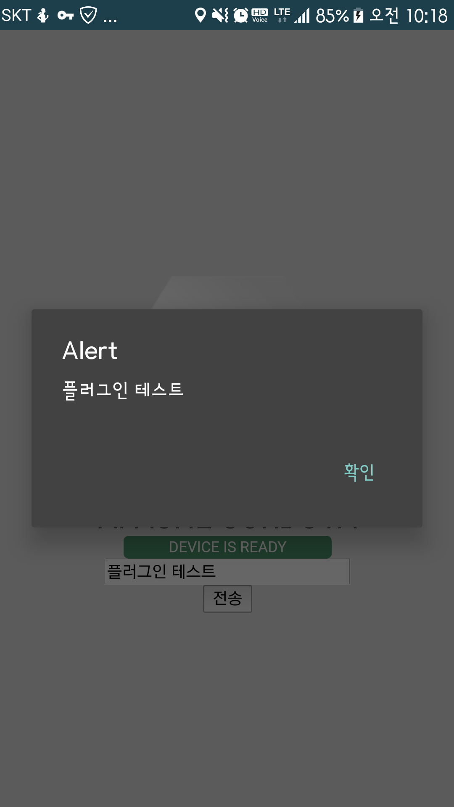
정상적으로 플러그인이 연결된 것을 확인 할 수 있다.
플러그인 삭제
본 섹션에서 설명하는 내용은 여지껏 작업한
myPlugin프로젝트를 바탕으로 설명합니다
플러그인 개발을 하다보면 설치, 수정, 삭제 등 다양한 시도를 해보게 된다.
하지만 설치된 플러그인을 제대로 지우지 않는 경우 복잡하게 꼬여 문제가 될 수 있다.
이 번외 섹션에서는 플러그인을 삭제할 경우 어느부분을 어떻게 지워야 하는지에 대해 설명한다.
Cordova 명령어 사용
Cordova-CLI에서는 plugin을 지우는 cordova plugin rm <plugin_id> 명령어를 제공한다.
해당 명령어로 플러그인을 지우기 위해서는 우선 플러그인의 ID가 필요하다.
플러그인의 ID는 cordova plugin ls로 확인이 가능하다.
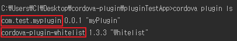
위의 내용을 바탕으로 com.test.myplugin 플러그인을 지우면 다음과 같은 문제가 생긴다
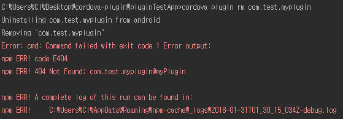
com.test.myplugin의 myPlugin버전을 찾을수 없다는 내용인데 package.json을 확인해보면
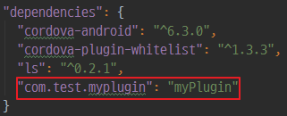
com.test.myplugin의 버전이 myPlugin의 형태로 되어있는 것을 확인할 수 있다.
위의 명령어 실행이후로, 추가적인 삭제가 필요한 부분을 하나씩 찾아나가자
프로젝트 내부
프로젝트 내부에서 설치된 플러그인은 아래의 위치에 각각 저장이 된다
- node_module
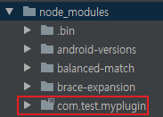 - plugins/fetch.json
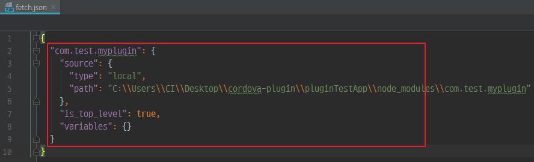 - config.xml
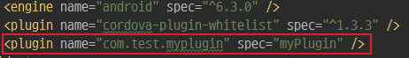 - package.json
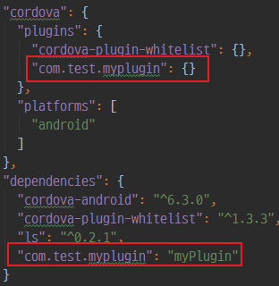
위의 내용들을 전부 지워주면 된다.
- node_module
단순히 삭제만 해주면 된다 plugins/fetch.json
1
{}
config.xml
<plugin name="com.test.myplugin" spec="myPlugin" />을 지워준다- package.json
cordova-plugins와 dependencies에 작성된 부분을 지워준다
프로젝트 외부
cordova plugin add --link를 통해 설치한 플러그인은 npm 전역에도 설치가 된다
윈도우 기준으로%appdata%/npm/node_modules로 들어가서
본인이 설치한 플러그인에 해당 되는 부분을 삭제해준다.
Cordova Plugin 만드는 기본적인 방법에 대해 설명했다.
본 포스트에서는 수정을 최소화 하고 동작에 중점을 두고 작업했기에 이름이나 ID 등이 마음에 들지 않을 수 있다.
그 부분을 수정하고 적용해 보는건 본인의 몫으로 남긴다.
- 글쓴이: Henotia
- 발행 일자: 2018-01-31 11:07:05
- 업데이트 일자: 2018-01-31 13:12:18
- 카테고리: Ionic
- License:
 저작자표시-비영리-동일조건변경허락 (CC BY-NC-SA 4.0）
저작자표시-비영리-동일조건변경허락 (CC BY-NC-SA 4.0）